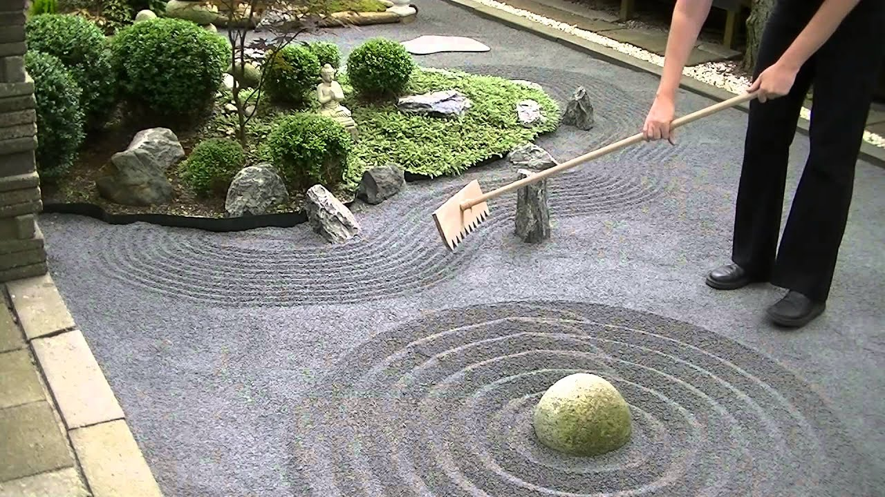

<div class="textcontainer">
<p class="margin"> </p>
<h2 align="center"><b><u>Week 10-12: Sand Garden Drawer</u></b></h2>
<p class="margin"></p>
The inspiration behind this project was beautiful Zen gardens --- specifically, sand gardens, which feature cool patterns drawn in big pits of sand.<p></p>
<div class="flexrow"></div>
<p></p>Initially, we used Nathan's sidewalk plotter and re-organized it to fit our needs. This process involved attaching new wheels, 3D printing a new
end effector attachment, and replacing the band wheel. To create the reset mechanism, we attached a button to one end of the conveyor area so that the
end effector would hit the button and trigger the reset. Then, we made it draw a circle. Here is the video:
<video width="300" controls muted autoplay style="display: block; margin: auto;">
<source src="drawer.mp4" type="video/mp4">
Drawer
</video>
</div>